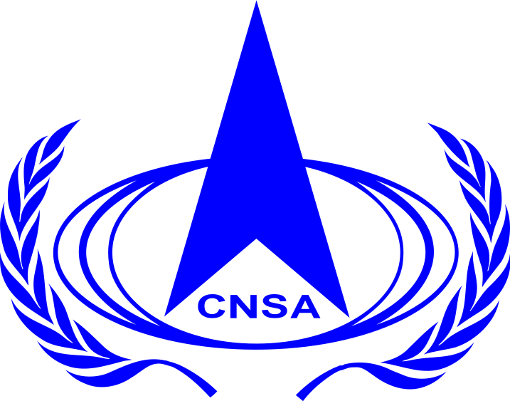
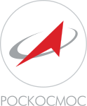
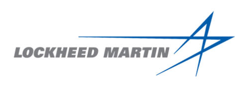

La NASA acronimo di National Aeronautics and Space Administration (in italiano: "Ente Nazionale per le attività Spaziali e Aeronautiche"), è l'agenzia governativa civile responsabile del programma spaziale degli Stati Uniti d'America e della ricerca aerospaziale.
Dopo il Programma Apollo per l'esplorazione della Luna, l'attività spaziale della NASA si è sviluppata attraverso il programma della stazione orbitale Skylab, il lancio di numerose missioni di esplorazione del sistema solare con sonde automatiche e lo sfruttamento dello spazio orbitale terrestre con le navette Space Shuttle.
La perdita di due Space Shuttle con i relativi equipaggi e i tagli di bilancio hanno indotto la NASA ad accantonare i progetti per nuove esplorazioni lunari con equipaggio umano e per l'invio di astronauti su Marte, la cui esplorazione continuerà a essere demandata a sistemi robotizzati. Il 14 settembre 2011 la NASA ha annunciato di aver selezionato il progetto per un nuovo sistema di trasporto con equipaggio umano, denominato SLS Space Launch System, destinato a prendere il posto degli Space Shuttle
Space Exploration Technologies Corporation (SpaceX) è un'azienda aerospaziale statunitense con sede a Hawthorne (California), USA. Costituita nel 2002 dal cofondatore di PayPal e CEO di Tesla Motors Elon Musk con l'obiettivo di creare le tecnologie per ridurre i costi dell'accesso allo spazio e permettere la colonizzazione di Marte, l'azienda ha sviluppato i lanciatori Falcon 1, Falcon 9 e Falcon Heavy, progettati con l'obiettivo di diventare riutilizzabili, e la capsula Dragon, lanciata dal Falcon 9 per rifornire la Stazione Spaziale Internazionale. I traguardi di SpaceX includono il primo razzo a propellente liquido finanziato da privati (Falcon 1) che ha raggiunto l'orbita nel 2008; è stata la prima compagnia privata a lanciare e recuperare un veicolo spaziale (2010) e la prima a inviare un veicolo spaziale verso la ISS (2012). Il lancio SES-8, nel 2013, è stato il primo di SpaceX verso l'orbita geosincrona, mentre il lancio del Deep Space Climate Observatory (DSCOVR), nel 2015, è stato il primo della compagnia che si è spinto oltre l'orbita terrestre. Nel 2015, SpaceX fece tornare con successo il primo stadio del Falcon 9 appena lanciato, diventando la prima a tentare e a riuscire in una simile impresa. Nel 2017 venne rilanciato con successo un primo stadio riutilizzato. Il 2018 vide il lancio inaugurale del Falcon Heavy, il vettore disponibile più potente al mondo con i suoi 22819 kN di spinta al decollo. La NASA ha anche assegnato alla compagnia un contratto nel 2011 per sviluppare e certificare una Dragon con equipaggio, nell'ambito del programma Commercial Crew Development (CCDev) per il trasporto di equipaggi verso la ISS
L'Agenzia spaziale europea, ufficialmente denominata Agence spatiale européenne (dal francese; in acronimo ASE) o, più frequentemente, European Space Agency (dall'inglese; in acronimo ESA), è un'agenzia internazionale fondata nel 1975 incaricata di coordinare i progetti spaziali di 22 Paesi europei. Il suo quartier generale si trova a Parigi, in Francia, con uffici a Mosca, Bruxelles, Washington e Houston. Il personale dell'ESA del 2016 ammontava a 2 200 persone (esclusi sub-appaltatori e le agenzie nazionali) e il budget era di 5,25 miliardi di euro. Attualmente il direttore generale dell'agenzia è Johann-Dietrich Woerner. Lo spazioporto dell'ESA è il Centre Spatial Guyanais a Kourou, nella Guyana francese, un sito scelto, come tutte le basi di lancio, per via della sua vicinanza con l'equatore. Durante gli ultimi anni il lanciatore Ariane 5 ha consentito all'ESA di raggiungere una posizione di primo piano nei lanci commerciali e l'ESA è il principale concorrente della NASA nell'esplorazione spaziale. Le missioni scientifiche dell'ESA hanno le loro basi all'ESTEC di Noordwijk, nei Paesi Bassi. Lo European Space Operations Centre (ESOC), di Darmstadt in Germania, è responsabile del controllo dei satelliti ESA in orbita. Le responsabilità dello European Space Research Institute (ESRIN) di Frascati, in Italia, includono la raccolta, l'archiviazione e la distribuzione di dati satellitari ai partner dell'ESA; oltre a ciò, la struttura agisce come centro di informazione tecnologica per l'intera agenzia. Lo European Astronaut Centre (EAC) è situato a Colonia, in Germania, ed è un centro per la selezione, l'addestramento, il supporto medico degli astronauti, oltre al supporto per le preparazioni al lancio e durante le missioni. Infine lo European Space Astronomy Centre (ESAC), situata a Villanueva de la Cañada, è il centro ESA per la ricerca astronomica.
L'Agenzia Spaziale Italiana (ASI) è un ente governativo italiano, creato nel 1988, che ha il compito di predisporre e attuare la politica aerospaziale italiana. Dipende e utilizza i fondi ricevuti dal Governo italiano per finanziare il progetto, lo sviluppo e la gestione operativa di missioni spaziali, con obiettivi scientifici e applicativi. L'ASI gestisce missioni spaziali in proprio e in collaborazione con i maggiori organismi spaziali internazionali, prima tra tutte l'Agenzia Spaziale Europea (dove l'Italia è il terzo maggior contribuente dopo Francia e Germania, e a cui l'ASI corrisponde una parte del proprio budget), quindi la NASA e le altre agenzie spaziali nazionali. Per la realizzazione di satelliti e strumenti scientifici, l'ASI stipula contratti con le imprese, italiane e non, operanti nel settore aerospaziale. L'ASI ha la sede principale a Roma e centri operativi a Matera (sede del Centro di geodesia spaziale Giuseppe Colombo) e Malindi, Kenya (sede del Centro spaziale Luigi Broglio). Il centro di Trapani-Milo, usato per i lanci di palloni stratosferici dal 1975, non è più operativo dal 2010. Ha attualmente circa 200 dipendenti, e un budget annuale al 2014 di circa 1,3 miliardi di euro. Le attività di ricerca vengono svolte in cooperazione con le Università, il CNR, gli osservatori astronomici ecc. I campi di studio sono in genere le "scienze dell'universo, le scienze della Terra, le scienze della vita" e la tecnologia aerospaziale.
L'Agenzia spaziale cinese o formalmente Agenzia nazionale cinese per lo spazio (CNSA) è l'agenzia civile della Repubblica popolare cinese responsabile dello sviluppo spaziale della nazione. L'agenzia venne creata il 4 aprile 1993 quando il ministro per l'Industria Aerospaziale venne diviso nella CNSA e nella China  Aerospace Corporation. La CNSA doveva essere responsabile delle politiche guida mentre la CASC doveva essere responsabile dell'applicazione e della realizzazione. Questa suddivisione fu considerata insoddisfacente da entrambe le formazioni che in sostanza erano una grande agenzia con molto personale condiviso e degli amministratori che avevano molte difficoltà a gestire una situazione così complessa. Nel 1998 iniziò una grande ristrutturazione che portò la CASC a venire suddivisa in molte piccole società. L'intenzione dei governanti era di creare un sistema di concorrenza simile a quello occidentale dove diversi soggetti competono per aggiudicarsi gli appalti delle agenzie governative. In questo modo le società sono possedute dal governo ma gestite da privati.
L'Agenzia spaziale russa è nota precedentemente come Agenzia russa per l'aviazione e lo spazio (RKA; in russo: Российское  авиационно-космическое агентство, Rossijskoe aviacionno-kosmičeskoe agentstvo), comunemente chiamata Roscosmos, è l'agenzia governativa responsabile per il programma spaziale russo e le ricerche aerospaziali.
La Lockheed Corporation era una delle più importanti industrie aerospaziali statunitensi e mondiali. Fu fondata originariamente nel 1912 e nel 1995 ci fu la fusione con la Martin Marietta, da cui nacque la nuova società Lockheed Martin. Dopo la fine della guerra, e soprattutto durante la guerra fredda, i progetti della Lockheed erano per la maggior parte di carattere militare. Il Lockheed U-2, che volò per la prima volta nel 1955, fornì moltissime informazioni sui paesi dell'Unione sovietica Il Lockheed SR-71 fu notevolmente avanzato per il suo periodo e rimane insuperato in molte aree di utilizzo.  A partire dall'F-80, i progetti segreti della Lockheed furono sviluppati in un complesso chiamato "Skunk Works": il metodo di lavoro, su idea di Kelly Johnson, era quello di concentrare gli ingegneri più brillanti in posto isolato dove potessero concentrarsi su un singolo progetto. Questo complesso divenne famoso e vide la realizzazione di molti progetti di successo della Lockheed, tra cui gli aerei spia U-2 (nei tardi anni cinquanta) e SR-71 (1962). Alcuni progetti furono di straordinario successo e spesso vennero sviluppati avendo poche risorse a disposizione; ancora oggi il termine "skunk works" indica un posto dove poche grandi menti sviluppano lavori eccezionali. A partire dal 1º gennaio 1954 venne avviata una divisione dedicata ai missili (Missile Systems Division) che venne poi rinominata Lockheed Missile and Space Company (LMSC). La prima realizzazione fu il velivolo senza pilota da alta quota X-7, realizzato per testare i motori ramjet. Dal 1956 iniziò la progettazione di satelliti da spionaggio per l'intelligence statunitense, e nel 1960, dopo numerosi fallimenti, venne lanciato con successo il primo satellite-spia, chiamato CORONA. Oltre a costruire satelliti sempre più perfezionati, la Lockheed si occupò anche dello stadio superiore del razzo Agena. Sempre nello stesso anno venne stipulato un contratto per lo sviluppo del missile balistico intercontinentale sottomarino Polaris (realizzato poi nel 1959), seguito poi dai missili nucleari Poseidon e Trident. La nuova divisione partecipò a molti programmi spaziali della NASA, tra cui la realizzazione delle mattonelle dello scudo termico dello Space Shuttle, la gestione a terra della flotta di Shuttle al John F. Kennedy Space Center e l'attivazione della base aerea di Vandenberg.
Airbus SE (in precedenza Airbus Industrie) è un costruttore europeo di aeromobili. È il secondo produttore di aerei civili al mondo per numero di consegne dopo Boeing. L'Airbus nasce nel dicembre 1970 come consorzio di imprese francesi e tedesche col nome di Airbus Industrie, a cui poi si aggiungeranno partecipanti spagnoli e britannici, allo scopo di riuscire a competere ad armi pari con i giganti dell'aeronautica statunitensi: Boeing, McDonnell Douglas e Lockheed Aircraft Corporation. Presidente di Airbus è Fabrice Brégier, e la sede principale è a Tolosa (Francia). Ha circa 56 000 dipendenti e gli azionisti erano, fino al 2006, EADS (80%) e BAE Systems (20%). Airbus è passata da consorzio a joint venture nel 2001. La EADS e la BAE Systems hanno trasferito tutte le loro attività collegate all'Airbus a una nuova società; in cambio le due ditte conferenti hanno ricevuto azioni di questa nuova società.
La Boeing Company, nata tra la fusione di McDonnell Douglas e Boeing è la più grande costruttrice statunitense di aeromobili
e la più grande azienda nel settore aerospaziale. Ha sede a Chicago, ma i suoi stabilimenti principali si trovano nei pressi di  Seattle. È anche il secondo più grosso contraente militare degli Stati Uniti ed è il primo produttore mondiale di aerei civili.
Seattle. È anche il secondo più grosso contraente militare degli Stati Uniti ed è il primo produttore mondiale di aerei civili.
© Copyright "Astronomy", 2018